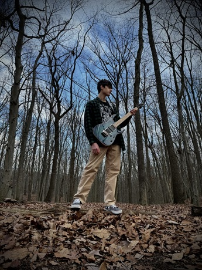

Ethan Rotolo is a kindhearted and hardworking individual of many hobbies and skill sets. He is fascinated in music and plays both acoustic and electric guitar. His favorite genres all revolve around guitar as well such as fast heavy metal, surf rock, other guitar oriented genres. He is also very artistic in illustration and creates sketches and logos for fun. Ethan is also dedicated to martial arts and has earned his second degree black belt in Taekwondo, and still practices to this day. He has also been fulfilling his lifelong dream of surfing for a few years and has excelled in shredding the waves.
Ethan is an upcoming graduate of Marlboro High School as he is finishing up his senior year to the best of his abilities and exceeding in his classes and social life. He intends to go to Brookdale Community College for the first two years and then either go to another college to finish off his bachelor’s or end it with his associates and go to a trade school. He hopes to make use of his education to get a good job and make good wealth.
While never being handed a paycheck, Ethan has taken many responsibilities in volunteer work such as being an assistant in Confraternity of Christian Doctrine (CCD) and while also being an alter boy at his masses. He has also participated in beach cleanups and other activities to better the environment around him while not being paid a single penny.
Ethan has received many achievements and rewards in his lifetime such as his medals from competing in his Taekwondo tournaments as well as his ranking certificate. In his school career, he has also earned numerous kindness awards and honor rolls.